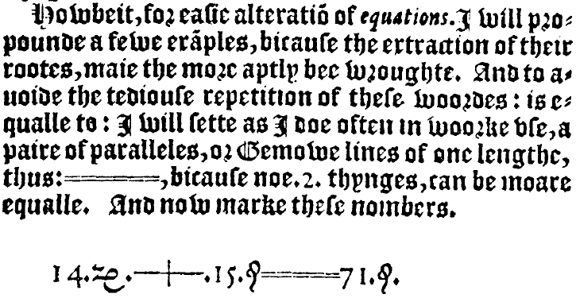
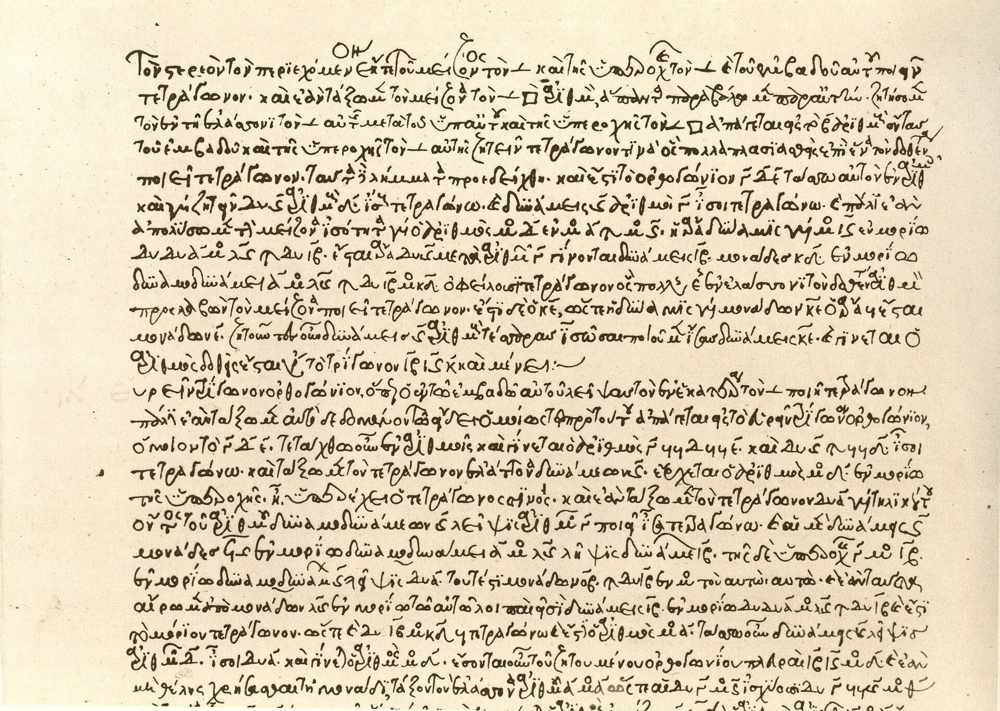
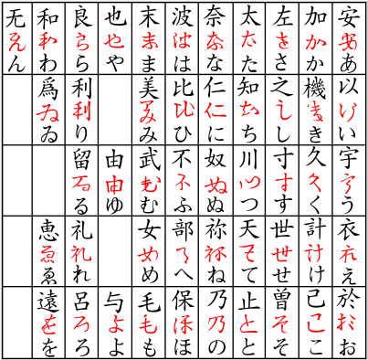

第1回
数式を文として読む
粘土板に刻まれた数の表（プリンプトン322、紀元前1800年ごろ）。読み方を知らなければ、ただの傷にしか見えない。
写真：作者不詳／パブリックドメイン／Wikimedia Commons（File:Plimpton 322.jpg、コロンビア大学所蔵）
第1回
粘土板に刻まれた数の表（プリンプトン322、紀元前1800年ごろ）。読み方を知らなければ、ただの傷にしか見えない。
写真：作者不詳／パブリックドメイン／Wikimedia Commons（File:Plimpton 322.jpg、コロンビア大学所蔵）
第0部「記号と言葉」の最初の回。数式は「主語と述語のある文」であること、等号の種類、文字の読み方、そして省略の段階という考え方を、ゆっくり確かめる。以後のすべての回は、この回の記号と「省略の段階」にリンクして戻れる。
この教材は、数学の本で説明されないまま使われている約束ごとを、全部ことばにして書く。「こんなこと知っている」と思う部分は、飛ばして次へ進んでよい。ただし、飛ばしたはずの記号が後の回でわからなくなったら、その記号のところへリンクで戻れるようになっている。
記号が出てくるたびに、緑色の枠（記号）で「①読み方 ②日本語での意味 ③省略していない書き方 ④どこで出会うか」を書く。全部の記号は 記号索引 からも探せる。
まず、この回で新しく説明する記号の一覧。右の列の「→」で、説明のある節へ飛べる。（第1回は最初の回なので、「前の回で出た記号」はない。）
| 記号 | 読み方 | ざっくりした意味 | 説明 |
|---|---|---|---|
| $=$ | イコール | 左と右が同じ値 | →2.1 |
| $:=$ | コロンイコール | 左の名前を、右の式で決める | →2.2 |
| $\equiv$ | 合同／恒等 | どんな値でも常に同じ | →2.3 |
| $\approx$ | ニアリーイコール | だいたい同じ | →2.4 |
| $\propto$ | 比例 | 左は右の定数倍 | →2.5 |
| $\neq$ | ノットイコール | 等しくない | →2.6 |
| $\lt\ \gt\ \le\ \ge$ | 未満・より大きい・以下・以上 | 大小の関係 | →2.6 |
| $x_1$（添字） | エックス・いち（エックス・ワン） | 名前に番号やラベルをつける | →4.1 |
| $x^2$（肩の数字） | エックスの二乗 | 冪（べき） | →4.2 |
| $x^{(2)}$ | エックスの括弧二 | 2番目の何か（冪ではない） | →4.3 |
| $x'$ | エックス・プライム | 別のもの、または微分 | →4.4 |
| $\cdots$（三点リーダー） | てんてんてん | 同じ規則で続く部分を省く | →4.5 |
| ギリシャ文字 | アルファ、ベータ… | 文字の足りない分を補う | →3 |
数学の本のページを開くと、記号が並んでいる。これを「なんとなく雰囲気で」眺めていると、1行がどこで切れて、どの部分が主張で、どの部分が材料なのか、わからなくなる。それが「記号がわからない」という感覚の、かなり大きな原因になっている。
日本語の文には、「何が（主語）」「どうする／どうだ（述語）」がある。数式にも、これと同じものがある。それを最初に区別しておく。
①読み方：「しき」「かんけいしき」。
②日本語での意味：式とは、計算した結果として1つの値（または1つの量）になる記号の並び。日本語でいえば名詞（のかたまり）。関係式とは、2つの式を等号や不等号などでつないで、正しいか正しくないかを言える形にしたもの。日本語でいえば文。
③省略していない書き方：この区別そのものに略記はない。ただし本によっては、関係式のことも単に「式」と呼ぶ。この教材では区別して書く。
④どこで出会うか：すべての科目。
例を並べる。
| 書いたもの | 式か関係式か | 日本語に直すと |
|---|---|---|
| $x+1$ | 式（名詞） | 「$x$ に1を足したもの」 |
| $3$ | 式（名詞） | 「3」 |
| $x+1=3$ | 関係式（文） | 「$x$ に1を足したものは、3に等しい」 |
| $x+1\lt 3$ | 関係式（文） | 「$x$ に1を足したものは、3より小さい」 |
| $x+1=3$ ならば $x=2$ | 関係式をつないだ文 | 「前の文が正しいなら、後ろの文も正しい」 |
「$x+1$」だけを書いて止まるのは、日本語で「りんごの」とだけ言って止まるのに近い。何も主張していない。主張は、関係式になって初めて生まれる。
図1.1 を見る。日本語の文と数式 $x+1=3$ を上下に並べて、部品を1つずつ対応させたものである。
関係式には、次の3つの状態がある。
3番目の「文字の値しだいで変わる文」を、条件と呼ぶ。「$x+1=3$ を解く」とは、「この文が正しくなるような $x$ の値をすべて探す」ことである。答え「$x=2$」もまた1つの関係式（文）で、「$x$ は2である」と読む。
「$=$ の右に答えを書く記号だ」と思っていると、$x+1=3$ を「$x+1$ を計算して3を出せ」と読んでしまう。正しくは「$x+1$ と $3$ が同じ値になっている」という主張（または条件）である。計算の指示ではない。
多くの人が「$=$」を1種類の記号だと思っている。ところが数学の本は、同じ「$=$」の形でまったく違う3つの用法を、説明なしに混ぜて書く。ここがわからなくなる、最初の落とし穴になる。以下、1つずつ区別する。
次の図1.2 は、この回で出会う関係の記号を6枚のカードにした地図である。各記号の読み方・意味・省略前の形は、右上の節番号で示す 2.1〜2.6 に書いてある。
①読み方：「イコール」。文として読むときは「〜は…に等しい」「〜は…である」。
②日本語での意味：左の式と右の式が、同じ値になっているという主張。
③省略していない書き方：$=$ 自体は省略形ではない。ただし3つの顔がある（下の表）。どの顔なのかは、記号に書いていない。文脈から読み取る約束になっている。
④どこで出会うか：すべての科目。
| 顔 | 例 | 日本語で言うと | 見分け方 |
|---|---|---|---|
| (a) 条件（方程式） | $x+1=3$ | 「$x$ がこの値のときだけ正しい」 | $x$ が求めたい未知数のとき |
| (b) 恒等式 | $(x+1)^2=x^2+2x+1$ | 「$x$ が何であっても常に正しい」 | $x$ がどんな値でもよいとき。「展開する」「公式」 |
| (c) 結果の記述 | $2+3=5$ | 「計算した結果は5である」 | 文字がなく、数だけのとき |
(a) と (b) の違いを、実際に確かめる。$x=2$ を入れてみる。
なお、2.1 で使った 掛け算の「$\cdot$」と、記号を書かずに並べる書き方は、第6節の「省略の段階」でまとめて説明する。
(a) と (b) を取り違えると、「$x$ を求めよ」と言われていないのに $(x+1)^2=x^2+2x+1$ を解こうとして、「$x$ は任意」という答えになって混乱する。逆に、(a) を恒等式のつもりで使うと、「$x+1=3$ だから $x$ に何を入れても $x+1$ は3だ」という誤りにつながる。
「$x+1=3$」の $=$ は、正しいかどうかを問える文を作った。しかし、次のような書き方もある。
$$ v := \frac{\Delta x}{\Delta t} $$
これは「$v$ は $\Delta x/\Delta t$ に等しい」という主張ではない。「$v$ という名前を、右の式のことにする」という命名（約束）である。正しいか正しくないかを問う文ではない。
①読み方：「コロンイコール」。文として読むときは「左を、右で定義する」。
②日本語での意味：左の名前を、右の式のことだと決める。コロンのある側（左）が、これから決められる名前である。
③省略していない書き方：次のように日本語で書いたものを、記号1つにまとめている。
「$v$ を、$\Delta x/\Delta t$ のことと定める」または「$v$ とは $\Delta x/\Delta t$ のことである」。
④どこで出会うか：物理・工学の教科書の「定義」。量子力学・機械力学・制御工学。
教科書によって、定義の等号は次のように書き分けられる。どれも同じ意味で、「$=$」とも区別されないことがある。
最後のものが最も困る。「これは定義なのか、導かれた結果なのか」が、文脈からしか読み取れない。本を読むときは、「この等号の右辺は、さっき使った記号だけで書けているか（結果）、それともまだ名前のなかったものに名前をつけているか（定義）」を確かめるとよい。
①読み方：「合同」「恒等的に等しい」。文として読むときは「いつでも等しい」。
②日本語での意味：文字にどんな値を入れても等しい。2.1 の(b)（恒等式）をわざわざ強調するときに使う。例：$(x+1)^2\equiv x^2+2x+1$。
③省略していない書き方：「すべての $x$ について、$(x+1)^2=x^2+2x+1$」。つまり、「すべての…について」を記号 $\equiv$ の中に折りたたんでいる。（「すべての」を表す記号 $\forall$ は第2回で扱う。）
④どこで出会うか：微分方程式（「$f(x)\equiv 0$」は「すべての $x$ で $f(x)=0$」の意味）、線形代数、数論（別の意味：合同式）。
$\equiv$ には少なくとも3つの用法がある。
どの意味かは、その本が最初に宣言していることが多い。読み始めに「記号の約束」のページがないかを探す習慣をつける。
①読み方：「ニアリーイコール」。文として読むときは「ほぼ等しい」「近似的に等しい」。
②日本語での意味：厳密には等しくないが、目的に対して十分近い。「どれくらい近いのか」は、この記号には書かれていない。
③省略していない書き方：書かれていない部分を補うと、「差の絶対値が、問題にしている誤差の範囲より小さい」。例：$\sin 0.1 \approx 0.1$ は、「$|\sin 0.1 - 0.1|$ は小さい」の省略。
④どこで出会うか：物理（微小振動の近似）、数値計算、テイラー展開（第9回）。
実際にどれくらい近いのかを、数で確かめる。
| $x$ | $\sin x$ | $x-\sin x$（ずれ） |
|---|---|---|
| $0.5$ | $0.479426$ | $0.020574$ |
| $0.1$ | $0.099833$ | $0.000167$ |
| $0.01$ | $0.0099998$ | $0.00000017$ |
$x$ が小さいほど、ずれはさらに急に小さくなる。だから「$x$ が小さいとき $\sin x\approx x$」と書ける。$x=3$ では使えない（$\sin 3 = 0.1411\ldots$、$3$ とはまったく違う）。$\approx$ はどの範囲で成り立つかを必ず確認して使う記号である。
①読み方：「比例」。$y\propto x$ は「$y$ は $x$ に比例する」。
②日本語での意味：ある定数 $k$ があって、$y=kx$ と書ける。
③省略していない書き方：「$y\propto x$」$\;\Leftrightarrow\;$「ある定数 $k$ が存在して、$y=kx$」。定数 $k$ の値は記号に書かれていない。（$\Leftrightarrow$ と「存在して」は第2回で説明する。）
④どこで出会うか：物理・工学のスケーリング（$F\propto m$、$T\propto \sqrt{\ell}$）。
$y\propto x$ と $y=x$ は違う。$y\propto x$ は、右辺に定数倍がついている可能性を含む。一方、「$y\propto x+1$」のように書くと、$y=k(x+1)$ という意味になる。$x=0$ のとき $y=k\neq 0$ なので、いわゆる「正比例」（原点を通る）とは別物になる。
①読み方：「ノットイコール」。「〜は…に等しくない」。
②日本語での意味：左と右が違う値である。
③省略していない書き方：「$a\neq b$」は「『$a=b$』という文が正しくない」の省略。
④どこで出会うか：割り算の条件（「$x\neq 0$」）、固有値の議論（第20回）。
①読み方：$a\lt b$ は「$a$ は $b$ より小さい」（$a$ は $b$ 未満）。$a\gt b$ は「$a$ は $b$ より大きい」。$a\le b$ は「$a$ は $b$ 以下」。$a\ge b$ は「$a$ は $b$ 以上」。
②日本語での意味：数の大小の順序を表す。$\lt\ \gt$ は等しい場合を含まず、$\le\ \ge$ は等しい場合を含む。
③省略していない書き方：$a\le b$ は「$a\lt b$ または $a=b$」。「または」は第2回で記号 $\lor$ として扱う。
④どこで出会うか：区間（第2回）、極限の定義（第6回）、不等式の評価。
$\le$ を $\leqq$（二重線）や $\leqslant$（斜め線）と書く本がある。意味は同じ。$\ge$ にも別の書き方がある。この教材では $\le\ \ge$ で統一する。
PHOTO 1｜現実

1557年、レコードは二本の平行線を等号とした。理由は原文のとおり、bicause noe. 2. thynges, can be moare equalle（これ以上に等しいものはないから）。
Robert Recorde, The Whetstone of Witte (1557)／パブリックドメイン／Wikimedia Commons
数学や物理では、$a,b,c,\ldots,x,y,z$ だけでは文字が足りなくなる。そこでギリシャ文字を借りる。読み方を知らないと、声に出して読めないため、式を文として読む練習ができない。最初に表を作っておく。
①読み方：下の表のとおり。
②日本語での意味：文字にすぎない。特定の意味が決まっているわけではなく、慣習として使われる場所がある。
③省略していない書き方：略記ではない。ただし、物理・工学の本では、慣習により文字を読む前から意味が想像される。慣習は慣習であり、その本が別の使い方を宣言していたら、そちらが優先。
④どこで出会うか：すべて。
| 小文字 | 大文字 | 読み | よくある使われ方（慣習） |
|---|---|---|---|
| $\alpha$ | $A$ | アルファ | 角度、係数、加速度（角） |
| $\beta$ | $B$ | ベータ | 角度、係数 |
| $\gamma$ | $\Gamma$ | ガンマ | せん断ひずみ、比熱比、ガンマ関数 |
| $\delta$ | $\Delta$ | デルタ | 微小量（$\delta$）、変化量（$\Delta$）、クロネッカー、ディラック |
| $\varepsilon$（$\epsilon$） | $E$ | イプシロン | 微小量、ひずみ、誘電率 |
| $\zeta$ | $Z$ | ゼータ | 減衰比 |
| $\eta$ | $H$ | イータ | 効率、粘性 |
| $\theta$（$\vartheta$） | $\Theta$ | シータ | 角度 |
| $\kappa$ | $K$ | カッパ | 曲率、熱伝導 |
| $\lambda$ | $\Lambda$ | ラムダ | 固有値、波長 |
| $\mu$ | $M$ | ミュー | 平均、摩擦係数、$10^{-6}$（マイクロ） |
| $\nu$ | $N$ | ニュー | 動粘度、ポアソン比、振動数 |
| $\xi$ | $\Xi$ | クシー | 座標、変数 |
| $\pi$ | $\Pi$ | パイ | 円周率（小文字）、総乗（大文字、第4回） |
| $\rho$ | $P$ | ロー | 密度、相関係数 |
| $\sigma$ | $\Sigma$ | シグマ | 応力、標準偏差（小文字）、総和（大文字、第4回） |
| $\tau$ | $T$ | タウ | せん断応力、時定数 |
| $\phi$（$\varphi$） | $\Phi$ | ファイ | 角度、位相、ポテンシャル |
| $\chi$ | $X$ | カイ | 感受率、カイ二乗分布 |
| $\psi$ | $\Psi$ | プサイ | 波動関数 |
| $\omega$ | $\Omega$ | オメガ | 角振動数、角速度（小文字）、オーム（大文字） |
文字の右下や右上に小さな数字や記号がついていることがある。これを同じものだと思って区別しないと、$x_2$、$x^2$、$x^{(2)}$、$x'$ が全部「$x$ に何かがついたもの」としか見えない。しかし、意味はまったく違う。1つずつ区別する。
①読み方：$x_1$ は「エックス・いち」または「エックス・ワン」。$x_i$ は「エックス・アイ」。
②日本語での意味：名前 $x$ の仲間のうちの、1番目。数に限らず、ラベルでもよい（$x_{\max}$ は「$x$ の最大値」、$v_{\text{初}}$ は「初めの $v$」）。
③省略していない書き方：次のように書く本もある。「$x$ の 1番目」→ $x(1)$ または $x[1]$（コンピュータ）。つまり関数の引数のかわりに、右下に小さく書くのが添字。
④どこで出会うか：数列、ベクトルの成分（第5回）、総和（第4回）。
例：3つの数 $3,\;5,\;8$ を並べて名前をつけるとき、
$$ x_1 := 3,\qquad x_2 := 5,\qquad x_3 := 8 $$
と書く。（ここで使った $:=$ は 2.2 で説明した、名前をつける等号である。）「$x_2$ は5である」と読む。$x_i$ の $i$ は「どの番号でもよい」を表す仮の文字で、「$i=1,2,3$ のどれか」と思えばよい。
①読み方：$x^2$ は「エックスの二乗」。$x^3$ は「エックスの三乗」。$x^n$ は「エックスの $n$ 乗」。
②日本語での意味：$x$ を$n$ 回かけたもの。
③省略していない書き方：$x^3 = x\times x\times x$（$x$ を3つかけ合わせる）。ここで $x\times x\times x$ は、$x\cdot x\cdot x$ とも書き、さらに省略すると $x^3$ になる。
④どこで出会うか：すべて。
①読み方：「エックスの括弧に」「エックス・上付き括弧に」。
②日本語での意味：冪ではない。「2番目の $x$」「2回目の繰り返しの $x$」「2階微分」など、書いた本が決める。
③省略していない書き方：本が宣言している意味に展開する。例：$f^{(2)}(x)$ は「$f$ を2回微分したもの」。$x^{(k)}$ は「$k$ 回目の反復で得られた $x$」。
④どこで出会うか：テイラー展開の $f^{(n)}(a)$（第9回）、反復法（第50回）。
$x^2$（二乗）と $x^{(2)}$（「2番目」など）を同じと見てはいけない。括弧がつくだけで、「冪ではない」というサインになっている。
①読み方：「エックス・プライム」。$f'$ は「エフ・プライム」。$x''$ は「エックス・ダブルプライム」。
②日本語での意味：文脈によって2つの意味がある。(a) 「$x$ とは別の、似た量」（別の座標系の $x$ など）。(b) 「$f$ の導関数（微分したもの）」。
③省略していない書き方：(b) の場合、$f'(x) := \dfrac{df}{dx}(x)$ の省略。つまり「$f$ を $x$ で微分した関数」。
④どこで出会うか：(a) 座標変換、(b) 微積分（第7回で詳しく）。
(a) と (b) は、記号は同じでも意味が違う。見分けるには、「$f$ が関数かどうか」を見る。$x'$ が「$x$ を $t$ で微分したもの」なのか「別の座標」なのかは、その本のその節の冒頭で宣言されている。第7回で、微分の記号の流派（$f'$、$\dfrac{df}{dx}$、$\dot x$）を並べて整理する。
①読み方：「てんてんてん」。意味としては「以下、同じ規則で続く」。
②日本語での意味：同じ規則で続く部分を、書かずに省く。
③省略していない書き方：$1+2+\cdots+5 = 1+2+3+4+5$。つまり「規則を読み取って、省かれた項を補う」責任は読者側にある。
④どこで出会うか：数列、総和（第4回）、行列の成分（第5回）。
「$1,\;2,\;4,\;\cdots$」の次は、$8$（2倍）かもしれないし、$7$（差が1,2,3,…と増える）かもしれない。規則が1つに決まるように、最初の何項かを十分に書くのが書く側の責任である。最初の3項だけで規則を決めつけてよいのかは、読むときに注意する。この問題を避けるために、第4回で扱う総和記号 $\sum$ が作られた。
式を「文」として読むためには、「どこからどこまでが1つのまとまりか」が決まっていなければならない。これを決めている約束を、演算の優先順位という。この約束は、本には書かれていないことが多い。
この約束のとおりに読むと、次のことが起きる。
| 書いたもの | 約束に従った読み | $x=3$ のときの値 |
|---|---|---|
| $2x^2$ | $2\times(x^2)$ | $2\times 9=18$ |
| $(2x)^2$ | $(2\times x)^2$ | $6^2=36$ |
| $-x^2$ | $-(x^2)$ | $-9$ |
| $(-x)^2$ | $(-x)\times(-x)$ | $(-3)^2=9$ |
$2x^2$ と $(2x)^2$ では値が2倍ちがう。$-x^2$ と $(-x)^2$ では符号が逆になる。括弧があるかないかだけで、値が変わる。
図1.3 は、括弧のあるなしを「式の木」で比べたものである。木の下（葉）にある計算が先に行われ、根が最後に残る。
「$1/2x$」と書かれたら、どう読むか。2通りある。
上の「優先順位の約束」に従えば、掛け算と割り算は左から順にだから、$1/2x$ は $(1/2)\times x$ である。しかし、多くの人は $1/(2x)$ のつもりで書く。この曖昧さのために、本によっては「$1/2x$」を使わない。括弧を省略しないか、分数の形で書くとよい。
$a/bc$ の読みについて、「$bc$ をまとめて1つのかたまりとして割る」という約束を採る流派（物理の一部）と、「左から順」の約束を採る流派（プログラミング言語・多くの電卓）がある。この教材では、曖昧な書き方はしない（必ず括弧か分数で書く）。他の本を読むときは、前後の計算でどちらの意味か確かめる。
三角関数では、さらに別の約束がある。
$x=\pi/6$（$30^\circ$）で比べる。
| 書いたもの | 読み | 値 |
|---|---|---|
| $\sin^2 x$ | $(\sin x)^2$ | $(1/2)^2=0.25$ |
| $\sin x^2$ | $\sin(x^2)=\sin(0.2742\ldots)$ | $0.2707\ldots$ |
値がちがう。$\sin^2 x$ の肩の「2」は、$\sin$ にではなく、$\sin x$ という結果にかかっている。（ところが、$\sin^{-1}x$ は「$\sin x$ の $-1$ 乗」ではなく逆関数$\arcsin x$を意味する流派もあり、さらに混乱する。第3回で、関数の肩の数字をまとめて整理する。）
これまで見てきたことを、まとめて言い直す。数学の本は、次のようなことを説明なしに省略している。
省略は悪いことではない。短く書けるから、慣れた人には読みやすい。問題は、慣れる前の人には、何が省かれたのかわからないこと。さらに、省略の上に省略が重なると、元の形に戻れなくなる。
この資料では、書き方の「省略の度合い」を段階で呼ぶ。数字が大きいほど、省略が多い。
各段階で、何を省いたかと省いても誤解が起きない理由を書く。以降の回で省略形が出てくるたびに、この箱にリンクして戻れる。
| 段階 | 書き方 | 何を省いたか | 省いても困らない理由 |
|---|---|---|---|
| S0 | $2\times x\times x$ | （省略なし） | ― |
| S1 | $2\cdot x\cdot x$ | $\times$ を $\cdot$ に替える | $\times$ は文字 $x$ と紛らわしいため |
| S2 | $2xx$ | $\cdot$ を書かない | 数と文字、文字と文字が並んだら「掛ける」と約束した |
| S3 | $2x^2$ | 同じ文字の掛け算を肩の数字でまとめる | 冪の定義（4.2） |
注意：「文字と文字が並んだら掛ける」という約束は、$xy$ を「$x\times y$」と読む。しかし「$\sin x$」のように、関数名と文字が並んだ場合は掛け算ではなく、関数に値を入れると読む。また、数を並べたもの（$23$）は「2かける3」ではなく「二十三」である。並べて書く意味は、並ぶ記号の種類で決まる。
図1.4 は、上の表「省略の段階：掛け算」を階段にしたものである。1段降りるごとに、何を省いたかを矢印の横に書いた。
| 段階 | 書き方 | 何を省いたか | 省いても困らない理由 |
|---|---|---|---|
| S0 | $\sin(x)$ | （省略なし） | ― |
| S1 | $\sin x$ | 括弧を省く | $\sin$ の直後に文字が来たら、その文字が引数と約束した |
S1 は、引数が1つの文字か数のときだけ許される。引数が $x+1$ のような式のときは、$\sin(x+1)$ と括弧が必要。（$\sin x+1$ と書くと、「$(\sin x)+1$」と読まれる。）多変数関数の引数の省略（$\psi(x,t)\to\psi$）は、第3回で扱う。
| 段階 | 書き方 | 何を省いたか |
|---|---|---|
| S0 | 「すべての実数 $x$ について、$(x+1)^2=x^2+2x+1$ が成り立つ」 | （省略なし） |
| S1 | $(x+1)^2\equiv x^2+2x+1$ | 「すべての $x$ について」を $\equiv$ に折りたたむ |
| S2 | $(x+1)^2=x^2+2x+1$ | $\equiv$ ですらなく、ただの $=$ で書く。「すべての $x$」は読者が文脈から補う |
S2 が最も多く使われ、最も困る。2.1 で見たとおり、$=$ は3つの顔があるため、(a) 条件か (b) 恒等式かは、読者が文脈から判断しなければならない。
これからの全51回は、この4か条で書かれている。もし、どこかで説明が省かれていたら、それはこの資料の誤りなので、教えてほしい（ティーチングモードで質問すれば、その場で追記される）。
PHOTO 2｜現実

ディオファントス『算術』の写本の一頁。語の略号と記号が、文章の途中に混じっている。
Diophantus of Alexandria（写本）／パブリックドメイン／Wikimedia Commons
MITATE 2｜見立て

漢字（黒）を崩した形（赤）が、ひらがなになった。省略は一足飛びでなく、一段ずつ進んだ。
Fastpunkk／CC BY-SA 4.0／Wikimedia Commons
最後に、ここまでの記号を使って、式を日本語の文に直す練習をする。これができれば、式が読める。
次の式を、日本語の文に直せ。(1) $v := \dfrac{\Delta x}{\Delta t}$ (2) $\sin x \approx x\quad(x\text{ が小さいとき})$ (3) $T\propto\sqrt{\ell}$ (4) $x_1\neq x_2$
解答
① (1)：関係の記号は $:=$。左は「$v$」、右は「$\Delta x$ を $\Delta t$ で割ったもの」。2.2 により、$:=$ は「左を右のことと決める」。→ 「$v$ とは、$\Delta x$ を $\Delta t$ で割ったもののことである（と定める）」。
② (2)：関係の記号は $\approx$。左は「$\sin x$」、右は「$x$」。2.4 により「ほぼ等しい」。条件は括弧の中。→ 「$x$ が小さいとき、$\sin x$ は $x$ にほぼ等しい」。
③ (3)：関係の記号は $\propto$。左は「$T$」、右は「$\ell$ の平方根」。2.5 により、「ある定数 $k$ があって $T=k\sqrt{\ell}$」。→ 「$T$ は $\ell$ の平方根に比例する」。
④ (4)：関係の記号は $\neq$。左は「$x_1$」（4.1 により $x$ の1番目）、右は「$x_2$」。→ 「$x$ の1番目と2番目は、等しくない」。
次の (1)〜(3) の等号は、2.1 の (a)〜(c)、または 2.2 の定義のうちのどれか。理由とともに答えよ。
(1) $x^2=4$ (2) $(a+b)(a-b)=a^2-b^2$ (3) $k:=\dfrac12 m v^2$
解答
① (1)：$x$ が未知数で、$x=2$ や $x=-2$ のときだけ正しい。例えば $x=3$ では $9\ne 4$。→ (a) 条件（方程式）。
② (2)：$a=3,\;b=1$ を入れると、左は $(3+1)(3-1)=4\times 2=8$、右は $9-1=8$。$a=5,\;b=2$ では、左は $7\times 3=21$、右は $25-4=21$。どれを入れても一致するので、(b) 恒等式（展開すれば確かめられる：$(a+b)(a-b)=a^2-ab+ba-b^2=a^2-b^2$）。
③ (3)：コロンがついている。$k$ という名前を、右辺のことと決めている。→ 定義（命名）。
$x=-2$ のとき、次の4つの値を求めよ。(1) $x^2$ (2) $-x^2$ (3) $(-x)^2$ (4) $3x^2$
解答
① (1)：$x=-2$ を入れる。$x^2=(-2)^2$（負の数を入れるときは括弧をつける。そうしないと $-2^2$ になり、優先順位により $-(2^2)$ と読まれてしまうため）。$(-2)\times(-2)=4$。
② (2)：$-x^2=-(x^2)$（優先順位：冪が先、符号は後）。$x^2=4$ だから、$-4$。
③ (3)：$(-x)^2$。括弧の中が先。$-x=-(-2)=2$。$2^2=4$。
④ (4)：$3x^2=3\times(x^2)=3\times 4=12$。
(1) いつでも正しい（文字がなく、$2+3=5$ は成り立つ）。
(2) いつでも正しくない（$2+3=5\neq 6$）。
(3) 値しだいで変わる（$x=3$ のときだけ。$x=4$ では左は $8$ で右は $6$）。
(4) いつでも正しい（恒等式）。$x=0$ で左 $2$、右 $2$。$x=5$ で左 $12$、右 $12$。展開すれば $2(x+1)=2x+2\cdot 1=2x+2$。
(1) $3ab^2$：まず冪をほどく（省略の段階：掛け算の S3→S2）。$b^2=b\times b$ だから、$3ab^2=3abb$。掛け算の記号を補う（S2→S0）。$3\times a\times b\times b$。
(2) $\sin 2x$：関数の引数の括弧を補う（省略の段階：関数の引数）。引数は「$2x$」全体。$\sin(2x)$。さらに掛け算の記号を補う。$\sin(2\times x)$。
$x=0.1$：ずれ $=0.1-0.0998334=0.0001666$。元の値 $0.1$ の約0.17%。→ ほとんど同じ。
$x=1$：ずれ $=1-0.841471=0.158529$。元の値 $1$ の約16%。→ 目的によっては使えない。
2.4 のとおり、$\approx$ は「どれくらい近いか」を書いていない。使ってよい範囲は、目的の精度から自分で決める。